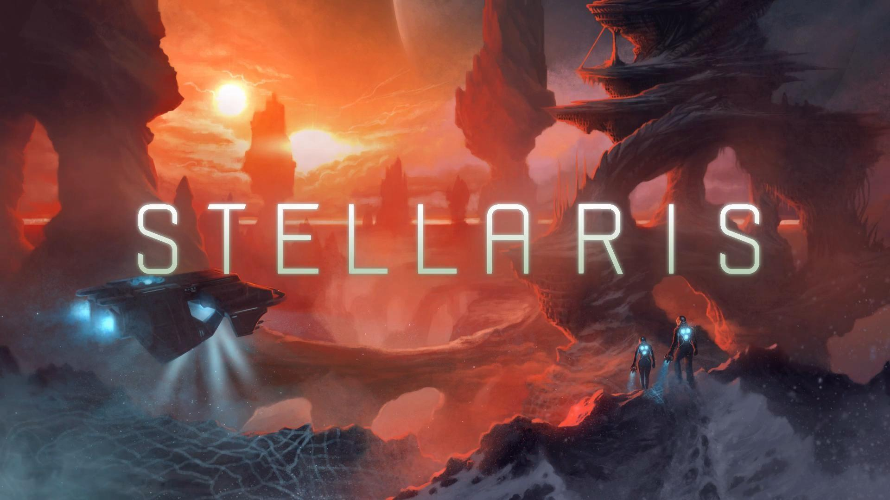

Qu'est-ce que Stellaris ?

Stellaris est un jeu de stratégie grand-public développé par Paradox Interactive et sorti le 9 mai 2016. Le joueur y incarne le dirigeant d'une civilisation spatiale naissante, depuis l'invention du voyage supraluminique jusqu'à la domination absolue de la galaxie.
Contrairement aux jeux 4X classiques, Stellaris se joue en temps réel pausable et met un accent particulier sur la narration émergente : chaque partie génère une galaxie procédurale unique peuplée d'empires, d'anomalies, de créatures cosmiques et de civilisations précurseurs mystérieuses.
Depuis sa sortie, le jeu a reçu plus de 30 DLC et extensions, dont la dernière en date, BioGenesis (mai 2025), qui introduit les vaisseaux vivants et la terraformation avancée.
Fiche technique
| Développeur | Paradox Development Studio |
| Éditeur | Paradox Interactive |
| Sortie | 9 mai 2016 |
| Plateformes | PC, PS4, Xbox One |
| Genre | Grand Strategy / 4X |
| Mode | Solo ; Multijoueur |
| Version actuelle | 4.3 « Cetus » (2026) |